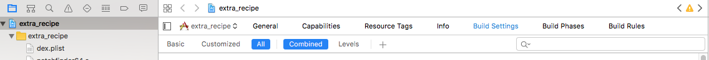
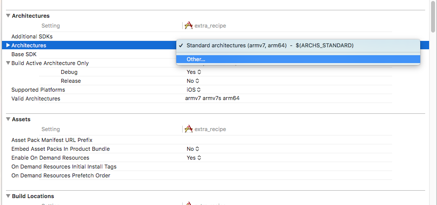
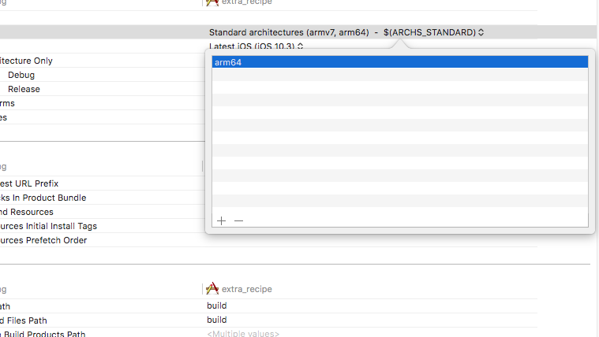
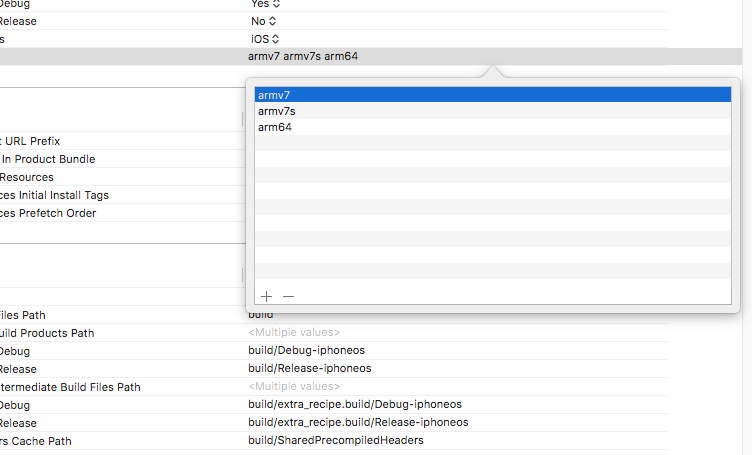
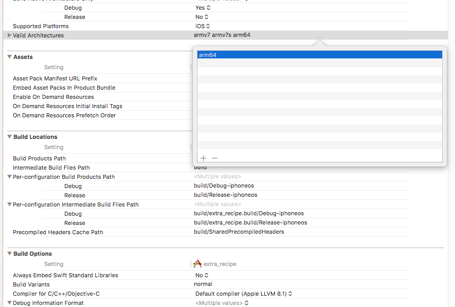

Step 1: Make Sure Your Settings Look Like This

Step 2: In The Architectures Section Choose Other...

Step 3: Remove Anything In That Box And Add arm64

Step 4: Open The Valid Architectures Box

Step 5: Remove armv7 And armv7s From The Valid Architectures Box

And Thats It!